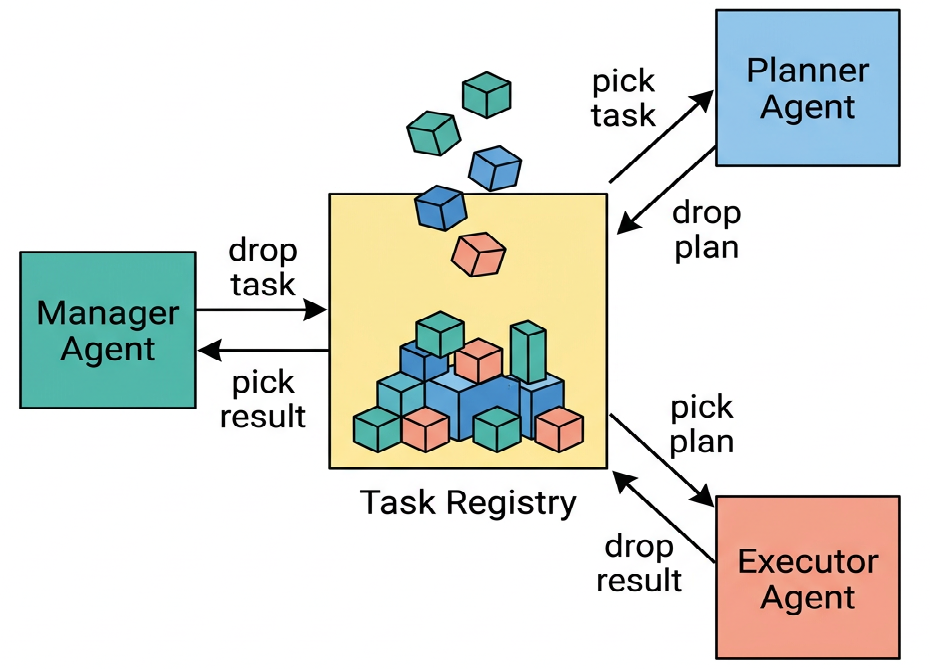
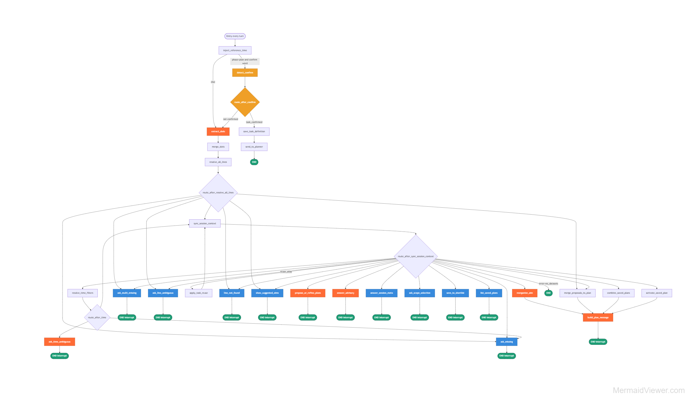

Overview
Traditional factory analytics relies on static dashboards (Grafana, PowerBI). When a production manager needs an ad-hoc insight — "Why did Power Tester 3 spike in energy consumption last Tuesday during the night shift?" — they must wait for a data engineer to manually write, test, and run a complex SQL join query across multiple tables. This creates a severe operational bottleneck.
EDAS (Event Driven Analysis System) eliminates this bottleneck: a decoupled multi-agent coordinator where non-technical stakeholders ask analytical questions in plain English, and specialized AI agents dynamically explore database structures, generate optimized queries, and deliver synthesized insights — all without exposing the underlying schema complexity.
This is Part 2 of the factory data initiative at Somic Ishikawa. It builds on the IIoT platform, where TRITON edge ingestion persists granular shop-floor data in PostgreSQL. Instead of a rigid pipeline, EDAS uses a shared Task Registry: each agent drops and picks work independently, enabling parallel execution, targeted scaling, and resume-from-failure instead of restarting from scratch.
Production Context & Business Impact
The Target Users: Production managers, plant operators, and operations executives who require immediate, ad-hoc insights from live factory floor data — but lack direct database access or SQL knowledge.
The Core Bottleneck: Traditional factory analytics relies on static dashboards. Complex analytical questions — multi-table joins, time-range correlations, anomaly root-cause analysis — require a data engineer to manually write, test, and run SQL queries. This causes delays measured in hours or days for what should be a 30-second answer.
The Solution (EDAS): A decoupled multi-agent coordinator where users ask analytical questions in plain English, and specialized agents dynamically explore database schemas, generate optimized read-only queries, and deliver synthesized insights — no SQL knowledge required.
Key Design Constraints: Queries execute against a live operational PostgreSQL database holding years of manufacturing telemetry. The system must guarantee non-destructive read-only execution, handle massive schema bloat without hallucinating joins, and coordinate multiple concurrent agent threads without race conditions.
Architecture
Independent agents watch a shared registry — drop tasks, plans, and results without direct coupling.
Task Registry

Manager drop/pick task · Planner drop/pick plan · Executor drop result
Meet the Agents
Three specialized agents — conversational intake, query planning, and execution with feedback loops.
Manager Agent
The Manager sits between what the user wants and what the IoT catalog knows. Every message routes through conversation lanes: direct planning when the user is clear, exploration when they need options, or advisory when they ask questions first. It validates machine/line names against the catalog, parses relative time phrases against a reference timestamp, and fills slots — line, time, and aim — until the user confirms with “go”.
On confirmation, the Manager writes the structured task to task_registry (the only database write in a session) and builds the Planner payload. Behind each reply, a 27-node LangGraph flow runs — only 6 LLM calls; the rest is deterministic routing and validation.
Manager LangGraph

27 nodes · 6 LLM calls · one reply per turn
Full deep-dive with slot examples and lane routing: Blog 1 on Medium — Building EDAS.
Planner Agent
The Planner is the strategist. It picks confirmed tasks from the Task Registry and reads each research topic the Manager structured. For every aim, it builds a detailed plan: which tables to query, how to join them, what filters and time bounds apply, and the step-by-step retrieval sequence the Executor should run. Completed plans are dropped back into the registry — the Planner never talks to the Executor directly; the registry is the only handoff point.
Executor Agent
The Executor is the doer. It picks plans from the registry and runs them against factory PostgreSQL. When something fails, it routes intelligently: data or table-related errors go back to the Planner for a revised plan; format or code-related errors are fixed locally and retried. Successful results are dropped to the registry for the Manager to return to the user.
Agent conversation flow
User ↔ Manager · Planner → Executor · error feedback to Planner
Core Engineering Challenges & Solutions
1. Mitigating Schema Context Bloat
The Challenge: Feeding an entire enterprise relational database schema (dozens of tables, hundreds of columns, and data types) directly into an LLM context window causes extreme token bloat, high costs, and severe attention degradation — causing the planner to hallucinate invalid table joins.
The Solution (Dynamic Schema Fetcher): The database schema is stored natively inside a localized lookup table. Before the Planner Agent builds its roadmap, a lightweight semantic search routing step identifies only the specific tables and columns relevant to the user's query, injecting a minimized, hyper-focused schema definition into the prompt context window.
2. Deterministic SQL Security Guardrails
The Challenge: Running dynamically generated code against an active operational data store carries catastrophic risk. A minor agent hallucination or malicious prompt injection could generate a DROP TABLE, DELETE, or UPDATE command, corrupting live manufacturing telemetry.
The Solution: Built a two-layer security framework for absolute non-destructive execution:
1. Regex AST Parser: Every string generated by the Executor Agent passes through a strict inspection layer that blocks any query containing mutation keywords or non-SELECT statements.
2. Transactional Rollbacks: The query runs under a restricted, read-only database user profile inside an isolated transaction block that auto-rolls back if any data modification is attempted.
3. Distributed State Coordination
The Challenge: In an event-driven multi-agent architecture, scalability introduces concurrency risks. If multiple agent threads poll the shared PostgreSQL Task Registry simultaneously, they encounter race conditions — two workers grabbing the same "Pending" task at the same millisecond, causing duplicate LLM execution, wasted token costs, and corrupted state updates.
The Solution — Pessimistic Concurrency Control: Workers pull jobs from the state table using an atomic SELECT ... FOR UPDATE SKIP LOCKED query block. This ensures that the moment an agent reads a task to change its status to running, that specific database row is instantly locked to other threads. Competing workers seamlessly skip it and process the next available task — no bottlenecks, no duplicates.
Writing & Code
Technical write-ups and open prompt templates for the EDAS agent stack.
Key Achievements & Impact
- Designed and implemented EDAS — event-driven multi-agent architecture converting raw factory PostgreSQL into conversational business intelligence
- Built Dynamic Schema Fetcher — lightweight semantic routing to mitigate LLM context bloat, injecting only relevant tables/columns into Planner prompts
- Developed two-layer SQL security framework — Regex AST Parser blocks mutation keywords; transactional rollbacks enforce read-only execution on live operational databases
- Implemented Pessimistic Concurrency Control via
SELECT ... FOR UPDATE SKIP LOCKED— eliminating task registry race conditions across concurrent agent threads - Built Manager Agent LangGraph flow (27 nodes, 6 targeted LLM calls) with catalog validation, slot filling, and Task Registry handoff
- Deployed shared Task Registry pattern — Manager, Planner, and Executor decoupled by design with resume-from-failure recovery
- Published Blog 1 on Medium + released open prompt templates on GitHub
- Connected to Part 1 IIoT platform — higher-granularity factory data as the analytics foundation
Agent Capabilities
Natural-language factory analysis through decoupled LangGraph agents and a PostgreSQL task hub.
Natural-language factory analysis
Users state goals in plain language — machines, time ranges, and aims — without knowing table schemas or SQL.
Event-driven Task Registry
Agents communicate through PostgreSQL task_registry — decoupled by design, not chained in a single pipeline.
Catalog-aware validation
The Manager Agent validates tables against the IoT catalog, parses relative time phrases, and fills slots before handoff.
Smart error routing
The Executor sends data/table errors back to the Planner; format and code issues are fixed locally and retried.